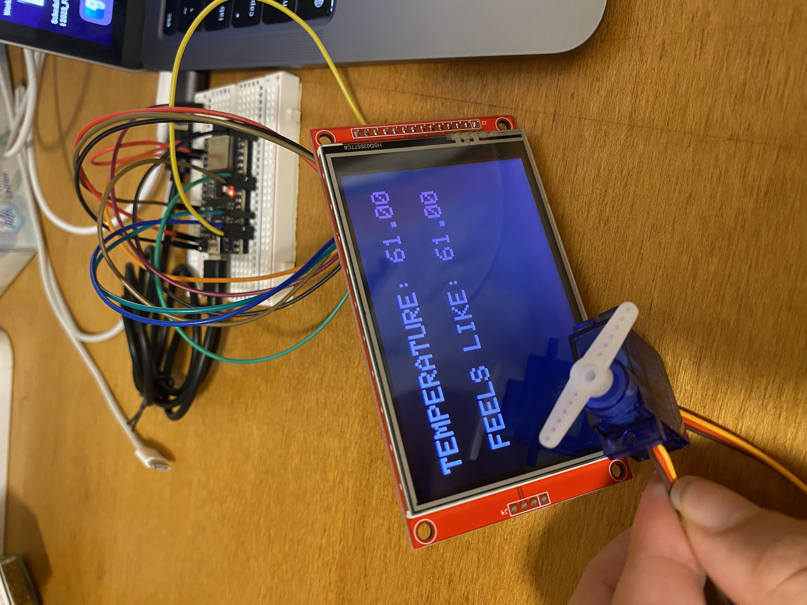

<h1 style= "text-align: center;">
Week 7: Electronic Output Devices </b></h1>
This week's assignment is to make a <strong>minimum viable product</strong> that has to (1) include at least one input and one output device (2) include a written microcontroller program that integrates at least one input and one output device and (3) use an oscilloscope to discover the time domain at which my output device is operating.
<h2 style= "text-align: center;">
Part 1: Minimum Viable Product (MVP) </b></h2>
For my MVP, I needed to build a circuit that connects a screen to a weather API so that the temperature is displayed. This includes my input and output in one go since it'll be taking in data from the weather API and displaying it on a screen.
I've graduated to an ESP32 board and I'm using an I2C LCD Display. The hardest part of this week was figuring out how to code in a display and then get information from a weather API. The weather API I used can be found <a href="https://www.weatherapi.com/">here</a>. After a long day of coding (and a lot of help from Bobby), the screen part of my MVP worked!
After this, I connected a servo motor to my ESP32 so that it would turn a certain amount if the temperature was above x degrees.
Here's a picture of my display and my servo!
<div class="image-container" style="margin-bottom: 20px; ; text-align: center;">

</div>
<h2 style= "text-align: center;">
Part 2: Box </b></h2>
Since the coding parts of my MVP are pretty straight-forward, I'll be focusing most of my efforts on making my weather buddy as aesthetically pleasing as possible. I hope to explore many different types of boxes.
To start, I'm going to use <a href="https://en.makercase.com/#/basicbox">makercase</a> to create a basic box to see how big of an area I want.